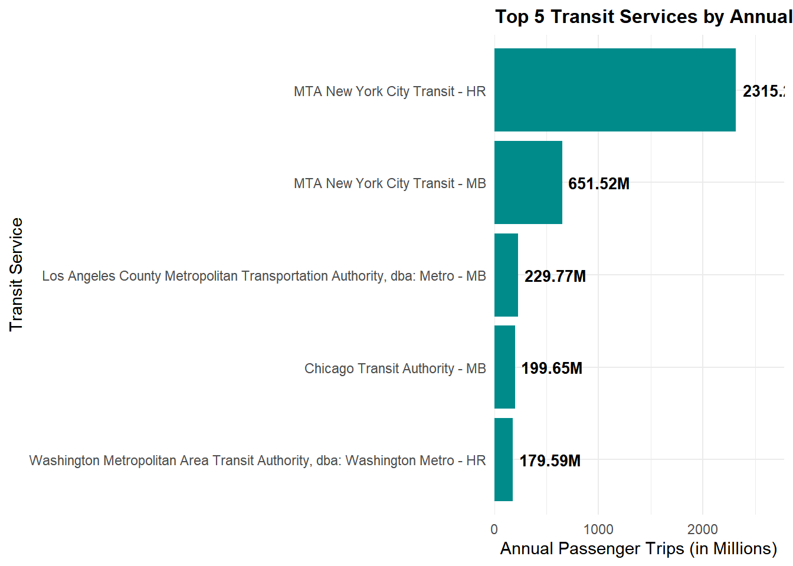
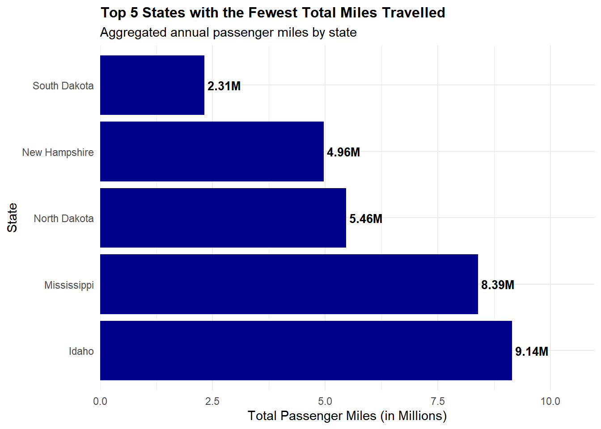
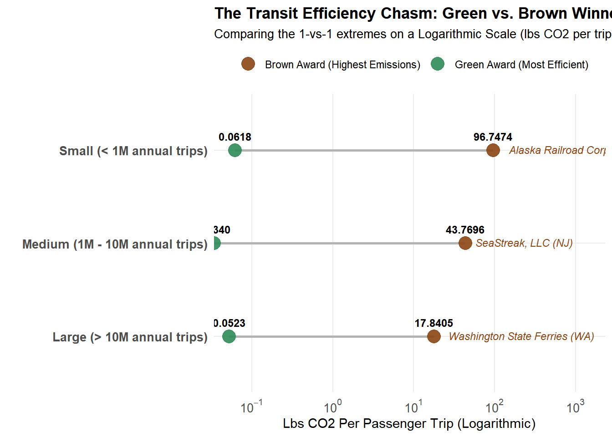

ALL GREEN AHEAD FOR THESE GOLD WINNERS! EXECUTIVE ANNOUNCES MOST ENERGY-CONSCIOUS PUBLIC TRANSIT AGENCIES
Green Transit Authority (GTA) Executive Director awards agencies for their outstanding commitment to sustainability. Others, not so much…
Author
Philip Lopez Jr
Published
November 8, 2026
FOR IMMEDIATE RELEASE
New York City, NY — November 8th, 2026 — The nation’s top environmental watchdog, Green Transit Alliance (GTA) keeps track of public transit emissions using the GTA Value Index (GTA VI). Each year, the three agencies with the highest GTA VI’s are given ‘Green Awards’ according to agency size: small, medium, and large. However, this year, GTA also decided to sling a bit of mud at the nation’s lowest performers by offering ’Brown Awards” for high emissions. Let’s dive into the data and see where the water is crystal clear and also where it gets murky.
Data Acquisition and Preparation
Code
#Task 1a: Data Acquisition - State Electricity Profiles# ***Instructor's code*** #library(tidyverse)library(stringr)library(httr2)library(rvest)get_eia_sep <-function(state, abbr){library(tidyverse)library(stringr)library(httr2)library(rvest)library(fs) state_formatted <-str_to_lower(state) |>str_replace_all("\\s", "") dir_name <- fs::path("data", "mp02") file_name <- fs::path(dir_name, state_formatted) fs::dir_create(dir_name, recurse=TRUE)if(!fs::file_exists(file_name)){ BASE_URL <-"https://www.eia.gov" RESPONSE <-request(BASE_URL) |>req_url_path("electricity", "state", state_formatted) |>req_headers(`User-Agent`="Mozilla/5.0 (Macintosh; Intel Mac OS X 10.15; rv:149.0) Gecko/20100101 Firefox/149.0" ) |>req_retry(max_tries =4, ) |>req_perform(file_name)resp_check_status(RESPONSE) } TABLE <-read_html(file_name) |>html_element("table") |>html_table() |>mutate(Item =str_to_lower(Item))if("U.S. rank"%in%colnames(TABLE)){ TABLE <- TABLE |>rename(Rank =`U.S. rank`) } CO2_MWh <- TABLE |>filter(Item =="carbon dioxide (lbs/mwh)") |>pull(Value) |>str_replace_all(",", "") |>as.numeric() PRIMARY <- TABLE |>filter(Item =="primary energy source") |>pull(Rank) RATE <- TABLE |>filter(Item =="average retail price (cents/kwh)") |>pull(Value) |>as.numeric() GENERATION_MWh <- TABLE |>filter(Item =="net generation (megawatthours)") |>pull(Value) |>str_replace_all(",", "") |>as.numeric()data.frame(CO2_MWh = CO2_MWh, primary_source = PRIMARY,electricity_price_MWh = RATE *10, # / 100 cents to dollars &# * 1000 kWh to MWH generation_MWh = GENERATION_MWh, state = state, abbreviation = abbr )}EIA_SEP_REPORT <-map2(state.name, state.abb, get_eia_sep) |>list_rbind()# ***My code*** #library(gt)library(tidyverse)#Format columns and apply gt stylesEIA_SEP_REPORT |>mutate(State =paste0(state, ", (", abbreviation, ")") ) |>select(`CO2 Emitted Per MWh of Electricity Produced (lbs)`= CO2_MWh,`Primary Source of Electricity Generation`= primary_source,`Average Retail Price (per MWh)`= electricity_price_MWh,`Total Generation Capacity (MWh)`= generation_MWh, State ) |># Turn it into a gt table objectgt() |># Format the price column as currency ($XX.XX)fmt_currency(columns =`Average Retail Price (per MWh)`,decimals =2 ) |># Add commas per 1,000 increment for the total capacityfmt_integer(columns =`Total Generation Capacity (MWh)`,use_seps =TRUE )
Code
#Task 1b: Data Acquisition - NTD Energy Usage# ***Instructor's code*** #load_ntd_energy <-function(){library(readxl)library(httr2)library(tidyverse)library(fs)# Create 'data/mp02' directory if not already present DATA_DIR <- fs::path("data", "mp02") fs::dir_create(DATA_DIR, recurse=TRUE) NTD_ENERGY_FILE <- fs::path(DATA_DIR, "2025_ntd_energy.xlsx")if(!fs::file_exists(NTD_ENERGY_FILE)){library(httr2)request("https://www.transit.dot.gov/") |>req_url_path("sites","fta.dot.gov","files","2026-09","2025 Energy Consumption_260806.xlsx") |>req_headers(`User-Agent`="Mozilla/5.0 (Macintosh; Intel Mac OS X 10.15; rv:149.0) Gecko/20100101 Firefox/149.0") |>req_perform(NTD_ENERGY_FILE) }if(file.info(NTD_ENERGY_FILE)$size <1e4){cat("I was unable to download the NTD Energy File. Please try again.\n")stop("Download failed. Please delete the corrupted file by running `unlink('data/mp02/2025_ntd_energy.xlsx')` and try again.") } to_numeric_fill_0 <-function(x){ x <-if_else(x =="-", NA, x)replace_na(as.numeric(x), 0) }read_excel(NTD_ENERGY_FILE) |>select(-c(`Reporter Type`, `Reporting Module`, `Gallons of Other Fuel`, `Other Fuel Description`)) |>mutate(across(-c(`Agency Name`, `Mode`,`TOS`), to_numeric_fill_0)) |>group_by(`NTD ID`, `Mode`, `Agency Name`) |>summarize(across(where(is.numeric), sum), .groups ="keep") |>mutate(ENERGY =sum(c_across(c(where(is.numeric))))) |>filter(ENERGY >0) |>select(-ENERGY) |>ungroup()}NTD_ENERGY <-load_ntd_energy()
Code
#Task 1c: Data Acquisition - Transit Service Provided# ***Instructor's code*** #load_ntd_service <-function(){library(httr2)library(tidyverse)library(fs)# Create 'data/mp02' directory if not already present DATA_DIR <- fs::path("data", "mp02") fs::dir_create(DATA_DIR, recurse=TRUE) NTD_SERVICE_FILE <- fs::path(DATA_DIR, "2025_ntd_service.csv")if(!fs::file_exists(NTD_SERVICE_FILE)){library(httr2)request("https://data.transportation.gov/resource/4fir-qbim.csv") |>req_url_query(`$query`=paste("SELECT `_5_digit_ntd_id` AS `NTD_ID`", "`max_agency` AS `AGENCY`","`max_reporter_type` AS `reporter_type`","`max_organization_type` AS `organization_type`","`max_city` AS `city`","`max_state` AS `state`","`mode`","`type_of_service`","`max_primary_uza_code` as `uza_code`","`max_primary_uza_name` as `uza_name`","`max_primary_uza_area_sq_miles` as `uza_sq_miles`","`max_primary_uza_population` as `uza_population`","`max_service_area_sq_miles` as `service_area_sq_miles`","`max_service_area_population` as `service_area_population`","`questionable_record` as `flagged_likely_inaccurate`","`sum_unlinked_passenger_trips_upt` as `total_upt`","`sum_passenger_miles` WHERE caseless_one_of(`report_year`, '2025') limit 50000", sep=",")) |>req_headers(`User-Agent`="Mozilla/5.0 (Macintosh; Intel Mac OS X 10.15; rv:149.0) Gecko/20100101 Firefox/149.0") |>req_perform(NTD_SERVICE_FILE) }if(file.info(NTD_SERVICE_FILE)$size <1e4){cat("I was unable to download the NTD Service File. Please try again.\n")stop("Download failed. Please delete the corrupted file by running `unlink('data/mp02/2025_ntd_service.xlsx')` and try again.") }read_csv(NTD_SERVICE_FILE) |>mutate(flagged_likely_inaccurate =!is.na(flagged_likely_inaccurate))}NTD_SERVICE <-load_ntd_service()
#Task 3a: Initial Analysis of SEP Data#Question 1library(tidyverse)# 1. Filter out the top 5 most expensive statestop_5_expensive <- EIA_SEP_REPORT |>slice_max(electricity_price_MWh, n =5)# 2. Build the bar chartggplot(top_5_expensive, aes(x = electricity_price_MWh, y =reorder(state, electricity_price_MWh))) +geom_col(fill ="darkgreen") +# Add labels to the ends of the bars formatted as currencygeom_text(aes(label = scales::dollar(electricity_price_MWh)), hjust =-0.1, fontface ="bold") +# Expand the x-axis limits slightly to ensure labels don't get cut offscale_x_continuous(labels = scales::dollar_format(), expand =expansion(mult =c(0, 0.15))) +labs(title ="Top 5 States with the Most Expensive Electricity Prices",x ="Average Retail Price (per MWh)",y ="State" ) +theme_minimal() +theme(plot.title =element_text(face ="bold", size =14),axis.text =element_text(size =11) )
Code
#Question 2library(tidyverse)library(gt)# 1. Filter top 5 states and calculate row-wide color hex codestop_5_dirty <- EIA_SEP_REPORT |>slice_max(CO2_MWh, n =5) |>mutate(State =paste0(state, ", (", abbreviation, ")"),row_color = scales::col_numeric(palette =c("#F5F5DC", "#8B4513"), domain =NULL)(CO2_MWh) ) |>select(`CO2 Emitted Per MWh of Electricity Produced (lbs)`= CO2_MWh,`Primary Source of Electricity Generation`= primary_source,`Average Retail Price (per MWh)`= electricity_price_MWh,`Total Generation Capacity (MWh)`= generation_MWh, State, row_color )# 2. Build table structure and apply text/number formattingdirty_table <- top_5_dirty |>select(-row_color) |>gt() |>tab_header(title =md("**Top 5 States with the Dirtiest Electricity Mixes**"), # Bold Titlesubtitle =md("*Ranked by highest pounds of CO2 emitted per Megawatthour (MWh)*") # Italic Subtitle ) |>fmt_currency(columns =`Average Retail Price (per MWh)`, decimals =2) |>fmt_integer(columns =c(`Total Generation Capacity (MWh)`, `CO2 Emitted Per MWh of Electricity Produced (lbs)`), use_seps =TRUE) |># 3. Style Header Block (Grey background and bold labels)tab_style(style =list(cell_fill(color ="#EFEFEF"), # Clean light grey backgroundcell_text(weight ="bold") # Bold lettering ),locations =list(cells_column_labels(columns =everything()), # Bold all column labelscells_title(groups ="title") # Apply to title block ) )# 4. Apply the synchronized brown colors to each body rowfor(i in1:nrow(top_5_dirty)) { dirty_table <- dirty_table |>tab_style(style =cell_fill(color = top_5_dirty$row_color[i], alpha =0.5),locations =cells_body(rows = i) )}# Display the styled tabledirty_table
Top 5 States with the Dirtiest Electricity Mixes
Ranked by highest pounds of CO2 emitted per Megawatthour (MWh)
#Task 3c: Explore NTD Service Data#Question 1library(tidyverse)library(scales)# 1. Filter for the top 5 services by UPTtop_5_upt <- NTD_SERVICE |># FIX: Correct Brooklyn to New York City if it matches the main MTA agency entriesmutate(city =if_else(city =="Brooklyn"&str_detect(AGENCY, "Transit"), "New York City", city),Service_Name =paste0(city, " - ", mode) ) |>slice_max(total_upt, n =5, with_ties =FALSE)# 2. Plot the graph in Millionsggplot(top_5_upt, aes(x = total_upt /1e6, y =reorder(Service_Name, total_upt))) +geom_col(fill ="darkcyan") +geom_text(aes(label =sprintf("%.2fM", total_upt /1e6)), hjust =-0.1, fontface ="bold", size =3.5) +scale_x_continuous(expand =expansion(mult =c(0, 0.2))) +labs(title ="Top 5 Transit Services by Annual Unlinked Passenger Trips (UPT)",x ="Annual Passenger Trips (in Millions)",y ="Transit Service" ) +theme_minimal() +theme(plot.title =element_text(face ="bold", size =12))

Code
#Question 2# Calculate the overall average trip length for MTA NYCmta_nyc_length <- NTD_SERVICE |>filter(str_detect(AGENCY, "New York City Transit|MTA New York City")) |>summarize(avg_length =sum(sum_passenger_miles, na.rm =TRUE) /sum(total_upt, na.rm =TRUE) ) |>pull(avg_length)
The average trip length for a passenger using MTA NYC Transit is 3.18 miles.
Code
#Question 3# Find the specific service with the longest average trip length in NYClongest_nyc_service <- NTD_SERVICE |>filter(state =="NY"&str_detect(AGENCY, "New York City|MTA|Transit")) |>mutate(avg_trip_length = sum_passenger_miles / total_upt) |>filter(!is.infinite(avg_trip_length) &!is.na(avg_trip_length)) |>slice_max(avg_trip_length, n =1)
The transit service in NYC with the longest average trip length is the Adirondack Transit Lines, Inc., dba: Adirondack Trailways (CB), with an average trip distance of 87.34 miles per passenger.
Code
#Question 4# 1. Create a quick lookup data frame for state namesstate_lookup <-tibble(state = state.abb,state_full = state.name)# 2. Aggregate and find the 5 states with the lowest transit milesfewest_miles_states <- NTD_SERVICE |>group_by(state) |>summarize(total_miles =sum(sum_passenger_miles, na.rm =TRUE)) |>filter(!is.na(state) & total_miles >0) |># Match abbreviations with full state namesleft_join(state_lookup, by ="state") |># Handle any non-standard region codes (like DC or PR) safely if they appearmutate(state_full =coalesce(state_full, state)) |>slice_min(total_miles, n =5)# 3. Build the chart in Millions using the full state namesggplot(fewest_miles_states, aes(x = total_miles /1e6, y =reorder(state_full, -total_miles))) +geom_col(fill ="darkblue") +geom_text(aes(label =sprintf("%.2fM", total_miles /1e6)), hjust =-0.1, fontface ="bold", size =3.5) +scale_x_continuous(expand =expansion(mult =c(0, 0.2))) +labs(title ="Top 5 States with the Fewest Total Miles Travelled",subtitle ="Aggregated annual passenger miles by state",x ="Total Passenger Miles (in Millions)",y ="State" ) +theme_minimal() +theme(plot.title =element_text(face ="bold", size =12) )

Data Analysis
Calculate Total Emissions
Code
#Task 5: Calculate Emissions#MASTER_TABLE set uplibrary(tidyverse)# 1. Prepare NTD_SERVICE anchor data (Agency + Mode Pair + State)service_anchor <- NTD_SERVICE |>select(NTD_ID, AGENCY, state, mode) |>distinct()# 2. Prepare NTD_ENERGY data, fix the ID type mismatch, and DROP the duplicate agency columnenergy_clean <- NTD_ENERGY |>rename(NTD_ID =`NTD ID`, mode = Mode) |># Convert ID from double to character to match NTD_SERVICE string typemutate(NTD_ID =as.character(NTD_ID)) |># FIX: Drop the extra Agency Name column so it doesn't conflict during the joinselect(-`Agency Name`)# 3. Prepare EIA_SEP_REPORT data eia_clean <- EIA_SEP_REPORT |>select(state_abb = abbreviation, `EIA CO2 Emitted (lbs/MWh)`= CO2_MWh )# 4. Execute the multi-stage Master Table join pipelineMASTER_TABLE <- service_anchor |># Step A: Connect fuel metrics using the paired matching keysleft_join(energy_clean, by =c("NTD_ID", "mode")) |># Step B: Connect EIA CO2 emissions by matching the transit state to EIA stateleft_join(eia_clean, by =c("state"="state_abb")) |># Step C: Refine layout structureselect(`Agency Name`= AGENCY,Mode = mode,`State Location`= state,everything() ) |># Keep only pairs that have valid recording inputsfilter(!is.na(`Agency Name`))#Add total emissionslibrary(tidyverse)# Helper function to safely fetch a column by string pattern without crashing if missingget_fuel_val <-function(df, pattern) { cols <- df |>select(matches(pattern))if (ncol(cols) >0) rowSums(cols, na.rm =TRUE) else0}# Execute master table emissions calculations using pattern matchingMASTER_TABLE_WITH_EMISSIONS <- MASTER_TABLE |># 1. First replace all NA values globally across numeric fields with 0mutate(across(where(is.numeric), ~replace_na(.x, 0))) |># 2. Add total emissions using safe pattern searchesmutate(`Total CO2 Emissions (lbs)`= (get_fuel_val(pick(everything()), "Diesel") *22.45) + (get_fuel_val(pick(everything()), "Gasoline") *18.73) + (get_fuel_val(pick(everything()), "Petroleum|LPG") *12.68) + (get_fuel_val(pick(everything()), "Liquefied Natural Gas|LNG") *10.15) + (get_fuel_val(pick(everything()), "Compressed|CNG") *0.12) + (get_fuel_val(pick(everything()), "Kilowatt|Electricity|kWh") * (`EIA CO2 Emitted (lbs/MWh)`/1000)) )
Relate Total Emissions and Passenger Service
Code
#Task 6: Normalize Emissions to Transit Usagelibrary(tidyverse)# 1. Prepare NTD_SERVICE anchor data and align the mode codes to full text namesservice_anchor <- NTD_SERVICE |>mutate(NTD_ID =as.numeric(NTD_ID),# FIX: Recode mode here too so it matches NTD_ENERGY perfectly!mode =recode_values(mode, "HR"~"Heavy Rail", "LR"~"Light Rail","CR"~"Commuter Rail","MG"~"Monorail / Automated Guideway","SR"~"Streetcar Rail","IP"~"Inclined Plane","CC"~"Cable Car","MB"~"Motorbus","CB"~"Commuter Bus","RB"~"Bus Rapid Transit","TB"~"Trolleybus","FB"~"Ferryboat","TR"~"Aerial Tramway","DR"~"Demand Response","DT"~"Demand Response Taxi","JT"~"Jitney","VP"~"Vanpool","PB"~"Publico","OR"~"Other Rail",default ="Unknown" ) ) |>select(NTD_ID, AGENCY, state, mode) |>distinct()# 2. Prepare NTD_ENERGY dataenergy_clean <- NTD_ENERGY |>rename(NTD_ID =`NTD ID`, mode = Mode) |>mutate(NTD_ID =as.numeric(NTD_ID)) |>select(-`Agency Name`)# 3. Prepare EIA_SEP_REPORT data eia_clean <- EIA_SEP_REPORT |>select(state_abb = abbreviation, `EIA CO2 Emitted (lbs/MWh)`= CO2_MWh )# 4. Re-join the Master Table with synchronized keysMASTER_TABLE <- service_anchor |>left_join(energy_clean, by =c("NTD_ID", "mode")) |>left_join(eia_clean, by =c("state"="state_abb")) |>select(`Agency Name`= AGENCY,Mode = mode,`State Location`= state,everything() ) |>filter(!is.na(`Agency Name`))# 5. Clean up NAs globally across the matched numeric fieldsMASTER_TABLE_WITH_EMISSIONS <- MASTER_TABLE |>mutate(across(where(is.numeric), ~replace_na(.x, 0)))# Helper column index finder for safetysafe_col <-function(df, pattern) { col_idx <-grep(pattern, colnames(df), ignore.case =TRUE)if (length(col_idx) >0) {if (length(col_idx) >1) rowSums(df[, col_idx], na.rm =TRUE) else df[[col_idx]] } else {rep(0, nrow(df)) }}# 6. Re-calculate row-wide total emissionsMASTER_TABLE_WITH_EMISSIONS$`Total CO2 Emissions (lbs)`<- (safe_col(MASTER_TABLE_WITH_EMISSIONS, "Diesel") *22.45) + (safe_col(MASTER_TABLE_WITH_EMISSIONS, "Gasoline") *18.73) + (safe_col(MASTER_TABLE_WITH_EMISSIONS, "Petroleum|LPG") *12.68) + (safe_col(MASTER_TABLE_WITH_EMISSIONS, "Liquefied Natural Gas|LNG") *10.15) + (safe_col(MASTER_TABLE_WITH_EMISSIONS, "Compressed|CNG") *0.12) + (safe_col(MASTER_TABLE_WITH_EMISSIONS, "Kilowatt|Electricity|kWh") * (MASTER_TABLE_WITH_EMISSIONS$`EIA CO2 Emitted (lbs/MWh)`/1000))################library(gt)# 1. Aggregate emissions by Agency and capture State Locationagency_efficiency <- MASTER_TABLE_WITH_EMISSIONS |>group_by(`Agency Name`) |>summarize(State =first(`State Location`),Total_Emissions_lbs =sum(`Total CO2 Emissions (lbs)`, na.rm =TRUE),.groups ="drop" ) |># 2. Join with transit metrics from NTD_SERVICEinner_join( NTD_SERVICE |>group_by(AGENCY) |>summarize(Total_UPT =sum(total_upt, na.rm =TRUE),Total_Passenger_Miles =sum(sum_passenger_miles, na.rm =TRUE),.groups ="drop" ),by =c("Agency Name"="AGENCY") ) |># Filter out non-operational entries and ensure emissions are trackedfilter(Total_UPT >1000& Total_Passenger_Miles >1000& Total_Emissions_lbs >0) |># 3. Compute efficiency metrics and apply size bracketsmutate(Emissions_Per_UPT = Total_Emissions_lbs / Total_UPT,Emissions_Per_Mile = Total_Emissions_lbs / Total_Passenger_Miles,Agency_Size =case_when( Total_UPT <1e6~"Small (< 1M annual trips)", Total_UPT >=1e6& Total_UPT <10e6~"Medium (1M - 10M annual trips)", Total_UPT >=10e6~"Large (> 10M annual trips)" ) )# 4. Isolate the most efficient winner per category tierefficiency_awards <- agency_efficiency |>group_by(Agency_Size) |>slice_min(Emissions_Per_UPT, n =1, with_ties =FALSE) |>ungroup() |>select(`Agency Size`= Agency_Size,`Agency Name`, State,`Total Annual Trips (UPT)`= Total_UPT,`Lbs CO2 Per Trip`= Emissions_Per_UPT,`Lbs CO2 Per Passenger Mile`= Emissions_Per_Mile ) |>arrange(desc(`Total Annual Trips (UPT)`))# 5. Render the final styled award tableefficiency_awards |>gt() |>tab_header(title =md("**Transit Efficiency Awards by Agency Size**"),subtitle =md("*Most efficient networks based on lowest CO2 emissions per Unlinked Passenger Trip (UPT)*") ) |>tab_style(style =list(cell_fill(color ="#EFEFEF"),cell_text(weight ="bold") ),locations =list(cells_column_labels(columns =everything()),cells_title(groups ="title") ) ) |>fmt_integer(columns =`Total Annual Trips (UPT)`, use_seps =TRUE) |>fmt_number(columns =c(`Lbs CO2 Per Trip`, `Lbs CO2 Per Passenger Mile`), decimals =4)
Transit Efficiency Awards by Agency Size
Most efficient networks based on lowest CO2 emissions per Unlinked Passenger Trip (UPT)
Agency Size
Agency Name
State
Total Annual Trips (UPT)
Lbs CO2 Per Trip
Lbs CO2 Per Passenger Mile
Large (> 10M annual trips)
City of Santa Monica, dba: Big Blue Bus
CA
10,123,253
0.0523
0.0159
Medium (1M - 10M annual trips)
City of Culver City, dba: Culver CityBus
CA
3,311,864
0.0340
0.0101
Small (< 1M annual trips)
City of Redondo Beach, dba: Beach Cities Transit
CA
265,919
0.0618
0.0152
‘Greenest’ Transit Agencies
As we can see here, California sweeps gold in all three categories! From largest to smallest by annual trips: Santa Monica, Culver City, and Redondo Beach have the greenest transit systems in the nation. Cowabunga dudes!
‘Brownest’ Transit Agencies
Code
library(tidyverse)library(scales)# 1. Isolate the absolute highest efficiency winner (1 per size tier)green_winners <- agency_efficiency |>group_by(Agency_Size) |>slice_min(Emissions_Per_UPT, n =1, with_ties =FALSE) |>ungroup() |>mutate(Award_Type ="Green Award (Most Efficient)")# 2. Isolate the single worst absolute emitter (CHANGED: 1 per size tier instead of 3)brown_winners <- agency_efficiency |>group_by(Agency_Size) |>slice_max(Emissions_Per_UPT, n =1, with_ties =FALSE) |>ungroup() |>mutate(Award_Type ="Brown Award (Highest Emissions)")# 3. Combine the 1-vs-1 matchupsall_winners_1v1 <-bind_rows(green_winners, brown_winners) |>mutate(Graph_Label =paste0(`Agency Name`, " (", State, ")") )# 4. Plot a highly legible Dot Plot with a Logarithmic Axisggplot(all_winners_1v1, aes(x = Emissions_Per_UPT, y = Agency_Size, color = Award_Type)) +# Draw a subtle background connector line between the two dots for each size groupgeom_line(aes(group = Agency_Size), color ="grey70", linewidth =1) +# Place large, crisp comparative dotsgeom_point(size =5, alpha =0.9) +# Add exact numeric text labels floating right above each dot (your original code)geom_text(aes(label =sprintf("%.4f", Emissions_Per_UPT)), vjust =-1.2, fontface ="bold", size =3.2, show.legend =FALSE, color ="black") +# FIX / ADDED: Places the Brown Agency Name and State off to the right of the brown dotsgeom_text(data =filter(all_winners_1v1, Award_Type =="Brown Award (Highest Emissions)"),aes(label = Graph_Label),hjust =-0.1, vjust =0.4, fontface ="italic", size =3, color ="#8B4513", show.legend =FALSE) +# Logarithmic scale allows both huge and tiny numbers to share the same axis beautifullyscale_x_log10(labels = scales::label_log(), expand =expansion(mult =c(0, 0.4))) +# Expanded right margin for text padding# Map your exact custom green and brown color choicesscale_color_manual(values =c("Green Award (Most Efficient)"="#2E8B57", "Brown Award (Highest Emissions)"="#8B4513")) +labs(title ="The Transit Efficiency Chasm: Green vs. Brown Winners",subtitle ="Comparing the 1-vs-1 extremes on a Logarithmic Scale (lbs CO2 per trip)",x ="Lbs CO2 Per Passenger Trip (Logarithmic)",y ="",color ="" ) +theme_minimal() +theme(plot.title =element_text(face ="bold", size =13),plot.subtitle =element_text(style ="italic", size =10),legend.position ="top",legend.title =element_text(face ="bold"),axis.text =element_text(size =10, face ="bold"),panel.grid.minor =element_blank() # Clean up logarithmic grid clutter )

On the other end of the spectrum we have states like Alaska, Washington, and (of course) New Jersey doing everything they can to hasten humanity’s demise. Like the great humanitarian Thanos once said: “Perfectly balanced, as all things should be.”
Transit Award Press Release
GTA used annual Unlinked Passenger Trips as a basis for how much CO2 agencies are emitting per trip and per passenger mile. By categorizing agencies according to ridership, GTA was able to find the three best and three worst performers in the nation. Coming in at the lowest CO2 Emissions per passenger trip and representing the medium size category is CityBus out of Culver City, CA (0.0340 lbs CO2 per passenger mile). Next, we have the large agency Big Blue Bus from Santa Monica, CA (0.053 lbs CO2 per passenger mile). To finish out the Green Awards, we have the small agency of Beach Cities Transit, out of Redondo Beach, CA (0.0618 lbs CO2 per passenger mile). Continuing our ascent through the smog, we have our third place Brown Award recipient, Washington State Ferries pumping a whopping 17.8405 lbs of CO2 into the atmosphere per passenger mile. Next highest is Seastreak from New Jersey, leaving 43.7696 streaks of brown in the water for every passenger they carry one mile. Finally, the dirtiest dog on the block: the Alaska Railroad Corporation with a massive 96.7474 lbs of CO2 per passenger mile! That’s nearly 3,000 times as much as
NoteAI Usage Statement
Google Gemini was used to help write some of the code in this project, but all non-code text was created without the use of any Generative AI tools.